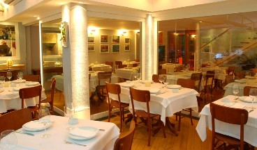

O Restaurante Gibraltar
O Gibraltar é uma viagem à cozinha mediterrânea, seus aromas e sabores.
Único restaurante do Rio de Janeiro com iguarias como o King Crab, além de bruschettas e tapas diversos. Do salão com charmosa adega climatizada ou da varanda vê-se a cozinha em plena atividade. Da grelha saem frutos do mar sempre frescos: camarão, lagosta, lagostim, cavaca, salmão, bacalhau e outros peixes. Da cozinha, massas e risotos clássico mediterrâneos com toques contemporâneos. E do forno à lenha, pizzas gourmet com influências napolitanas. Pra finalizar... sobremesas divinas!
O restaurante
{kind=link}
A cozinha mediterrânea
A culinária do Mediterrâneo envolve três continentes. Europa, Ásia e África, vários países (Espanha, Turquia, Grécia, Itália, Israel, Marrocos, França, Egito e muitos outros) e centenas de ilhas. Cada cultura tem seus próprios e únicos pratos e ingredientes, que reunidos formam uma rica cozinha conhecida mundialmente como Mediterrânea.
A cozinha mediterrânea é naturalmente saudável. É focada em grãos, azeitonas e azeite de oliva. Há também leguminosas, hortaliças, frutas, vinhos, alho, queijo, cebolas, peixe, aves e ovos. Com freqüência são as especiarias e ervas que identificam as cozinhas individuais dentro do Mediterrâneo.
{kind=link}
{kind=link}
{kind=link}
{kind=link}
{kind=link}
{kind=link}